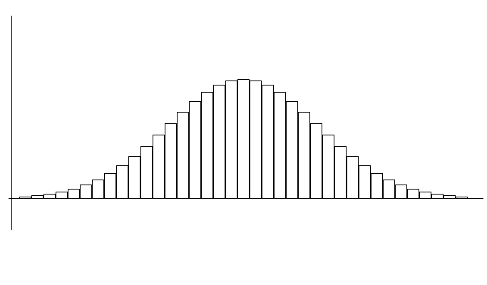
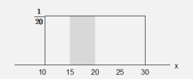

In case of the continuous random variable, calculating probability at each value of the random variable is meaningless, because there are infinite possible values and the probability at each value is considered zero. Instead of calculating the probability at a single value, the probability of an interval is of interest in case of the continuous random variable. For example, 'What is the probability of a commuting time between 25 and 35 minutes?' In order to obtain this probability, we can divide the sample space of the commuting time into several intervals and count the number of their frequencies and probabilities for 100 days as in Table 5.4.1. <Figure 5.4.1> is a histogram of this table.
Chapter 5. Probability Distribution
5.4 Continuous Random Variable
[presentation] [video]
Consider a statistical experiment that measures how long it takes for an office worker to get to work from home.
Past experience shows that the commuting time usually takes about 30 minutes to get to the work place if the traffic is not congested.
While the result of this experiment will have a real number near 30 minutes, we can assume generally that the sample space is larger than zero, and define a random variable \(\small X\) as the 'commuting time to work place'.
As such, if a random variable has an infinite number of possible values and it is uncountable, it is called a continuous random variable.
Table 5.4.1 Frequency table of the commuting time for 100 days \(\small X\) = ‘commuting time’ (unit: minute)
| Interval \((a \le X \lt b)\) | Frequency | Probability |
|---|---|---|
| \( 10 \le X \lt 30 \) \( 30 \le X \lt 50 \) \( 50 \le X \lt 60 \) \( 60 \le X \lt 70 \) \( 70 \le X \lt 90 \) |
5 30 40 20 5 |
5/100 30/100 40/100 20/100 5/100 |
| Total | 100 (days) | 1 |

<Figure 5.4.1> Histogram of \(\small X\) = ‘commuting time’
Using this frequency table, the probability of commuting time between 30 and 60 minutes can be calculated as follows.
$$ P(30 \le X \lt 60) = 30/100 + 40/100 = 70/100 $$
However, if you use this table, you can not calculate, for example, the probability of the commuting time between 25 and 35 minutes.
In order to calculate this probability, calculation will require a detail frequency table and a histogram such as <Figure 5.4.2> which has narrower intervals by obtaining more data.
If you increase the number of data and make the width of the interval close to zero, this histogram will be approximated to a continuous function as shown in <Figure 5.4.3>.
This function is called a probability distribution function of the continuous random variable. As shown in this Figure, many real world data have a bell shape, large amount of data are observed near the mean, symmetrical about the mean. It is called a normal distribution.

<Figure 5.4.2> Histogram with narrower intervals on many data

<Figure 5.4.3> Probability distribution function of a continuous random variable
If the probability distribution function of a continuous random variable can be expressed as a mathematical function f(x),
the desired probability can be obtained without finding the frequency table and histogram.
The probability of the random variable \(\small X\) at interval (\(a,b) \), denoted as \(P( a \lt X \lt b)\), can be obtained as the area between
(\(a,b) \) of f(x) as <Figure 5.4.4> which is the integral over (\(a,b) \) as follows:
$$
P(a \lt X \lt b)= \int_{a} ^{b} {} f(x)dx
$$

<Figure 5.4.4> \(P(a \lt X \lt b)\) of the continuous random variable \(\small X\)
The area under this function f(x) should be 1, because the addition of all probabilities is 1.
$$
P(-∞ \lt X \lt ∞)= \int_{-∞} ^{∞} {} f(x)dx = 1
$$
The integral over (\(a,b\) ) of a function f(x) is generally difficult to obtain.
For a normal distribution function, we use a table to calculate the probability which is discussed in Section 5.4.1.
The following is an example to calculate the probability of the uniform distribution.
Example 5.4.1
The delivery time to order a pizza and getting home have the same possibility as any time between 10 to 30 minutes (it is called a uniform distribution). Let the random variable X be the time takes to deliver a pizza to home. Find a probability distribution function of X and draw a graph. Find the probability of the delivery time between 15 and 20 minutes.
Answer
Since the random variable \(\small X\) has the same possibility as any number between 10 and 30, the probability distribution function (uniform distribution) is as follows.
\( \quad \small f(x) = \Big\{ \array { \frac {1}{30-10}, &\quad \text{if 10 < }x \text { < 30} \cr 0, &\qquad \text{elsewhere} } \)
<Figure 5.4.5> is the shape of this probability distribution function and it is called a uniform distribution between 10 and 30 denoted as Uniform(10,30).

<Figure 5.4.5> Uniform distribution on (10,30) and the probability of \(P(15 \lt X \lt 20)\)
The probability of the delivery time between 15 and 20 minutes is the area of the shaded rectangle of the <Figure 5.4.5> which can be calculated as follows.
\( \quad \small P(15 \lt X \lt 20) = (20 - 15) × \frac {1}{20} = 0.25 \)
Multiple Choice Exercise
*** Choose one answer and click [Submit] button
5.18 Which one of the followings is suitable as a probability distribution function?
5.19 Which of the followings is NOT a probability distribution function?
5.20 What is the average value of \(\small X\) when the variables \(\small X\) take values of 0, 1, 2 and 3 and the probability function \( f(x) = \frac{x}{6}\)
5.21 Which of the following is incorrect for the probability distribution function f(x) defined for all values of a continuous random variable \(\small X\)?
5.22 What is the mean value of \(\small E(X)\) and the standard deviation \(σ(X)\) when the probability distribution of a random variable \(\small X\) is as follows?
| \(x\) | 0 | 1 | 2 | Total |
| \(\small P(X=x)\) | \(\frac{3}{10}\) | \(\frac{6}{10}\) | \(\frac{1}{10}\) | 1 |
5.23 The number of eyes when we throw one dice is from 1 to 6. If \(\small X\) is a random variable which represents the number of eyes, what is the expected value of \(\small E(X)\)?
5.24 What is the expected value of scores if you square the number of eyes appeared when you throw one dice?
5.25 Assuming that a random variable \(\small X\) take three values 0, 1, and 2, and their probabilities are 1/2, 1/3, 1/6 respectively. What is the value of the cumulative distribution function F(x) if 1 ≤ x < 2?